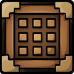

Blocks and items in Minecraft.
page contents
- Naturally Spawned Blocks
- blocks that cannot be crafted
- Man-made Blocks
- man-made blocks are blocks that can crafted but sometimes found naturaly
- Wood
- blocks that can be crafted from block from trees or are from trees
- Combat/Tools
- items and blocks used for fighting
- Plants
- living blocks and items
- Food & Farming
- thing to eat and things needed to make food
- Colored Blocks
- things that are colored
- Enchanting
- things needed for enchanting
- Ore Extracts
- things that can be extracted from ores
- Brewing
- potions and things needed for brewing
- Mobs
- Mob drops and spawn eggs